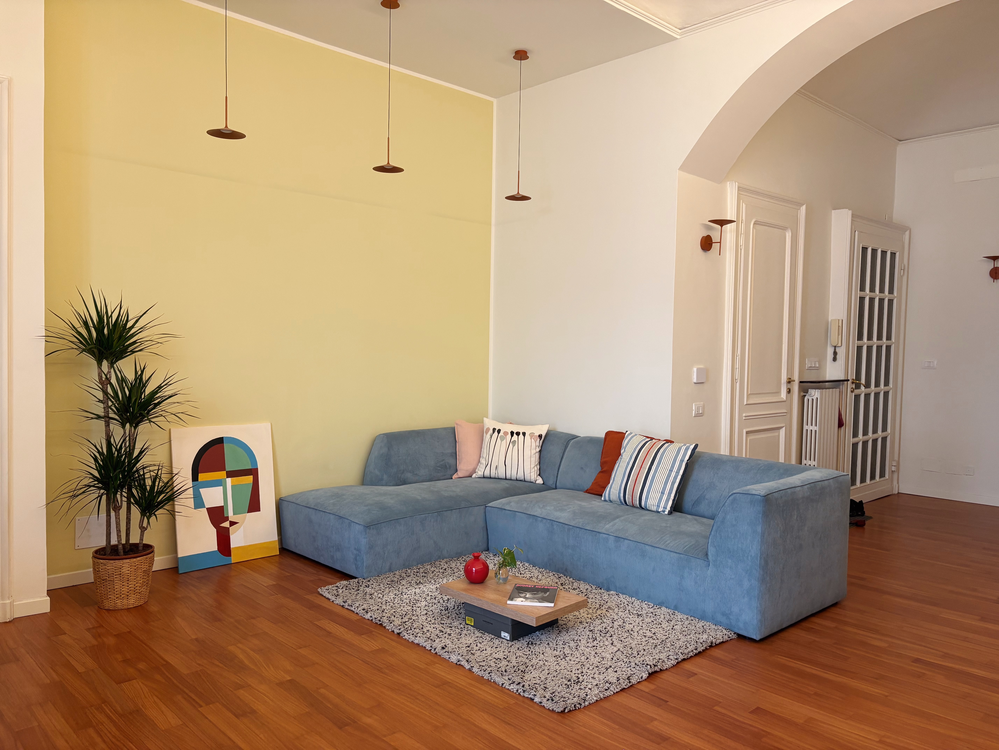
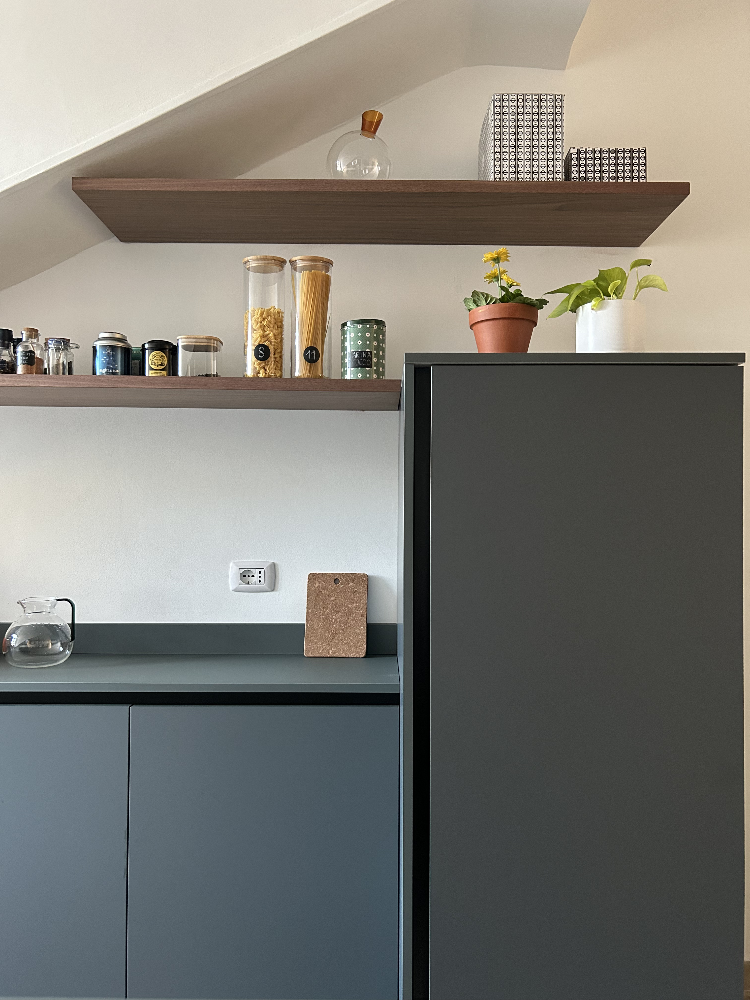

Ciao, sono Caterina,
architetto.
Progetto spazi che raccontano chi li abita.
Mi occupo di progettazione e ristrutturazione di interni. Ascolto le tue idee, le tue abitudini e i tuoi desideri per dare forma a una casa che ti somigli.
Ti racconto di meMi presento
La mia passione per gli spazi è nata da bambina, spostando i mobili della mia cameretta e immaginando ogni volta un modo diverso di abitarla. Quella curiosità è cresciuta con me, fino a diventare la mia professione.
Dopo il percorso universitario e l’abilitazione all’Albo degli Architetti di Torino, ho affinato il mio sguardo collaborando con diverse realtà nel campo delle ristrutturazioni di interni.
Oggi il mio lavoro prende vita dall’incontro con le persone. Mi piace conoscere le vostre storie, capire come vivete la casa e cosa vorreste cambiare. È da qui che ogni progetto prende forma.

Come lavoro
Ogni progetto inizia con l’ascolto.
Mi racconti le tue esigenze abitative e insieme le trasformiamo in spazi personalizzati, capaci di rispecchiare il tuo modo di vivere e accompagnare la tua quotidianità.
L’empatia e l’attenzione ai dettagli guidano ogni scelta: dalla distribuzione degli ambienti ai materiali, fino alle piccole cose che rendono una casa davvero tua.
Il mio obiettivo è farti sentire seguito e compreso durante tutto il percorso, dalla prima idea su carta alla realizzazione finale.

Cosa mi guida
Una casa bella da guardare.
E soprattutto, da vivere.
Credo che una casa ben progettata possa semplificare la vita e restituire energia. Uno spazio che accoglie le tue giornate, favorisce il tuo benessere e si adatta al tempo che cambia.
Per questo metto la persona al centro del progetto, traducendo esigenze concrete ed emozioni in soluzioni funzionali, armoniose e su misura.
Parliamo del tuo spazio.
Raccontami la casa che immagini. Cominciamo da qui.